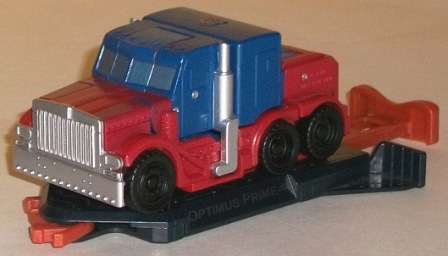
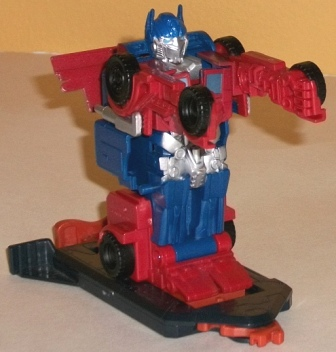
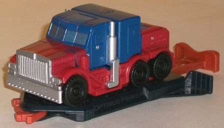
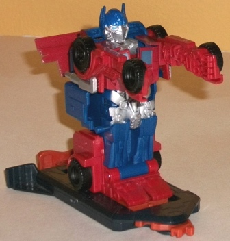
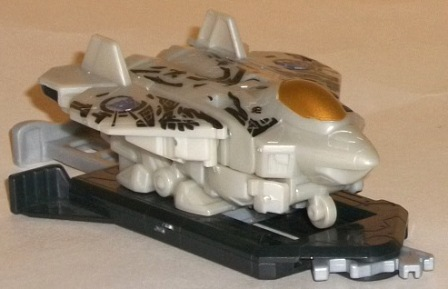
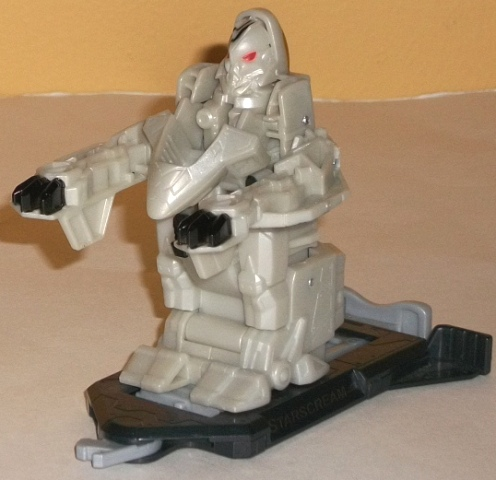

 
Allegiance : Autobot
Difficulty of Transformation : Very Easy
Color Scheme : Dark blue, dull red, pale dull red, black, and some silver, light sky blue, and light metallic silvery blue
Individual Rating : 5.3
 Optimus
Prime vs. Starscream (Bash Bots)
Optimus
Prime vs. Starscream (Bash Bots)
Overall Rating
: 5.1
 Optimus
Prime
Optimus
Prime


Allegiance
: Autobot
Difficulty of Transformation
: Very
Easy
Color Scheme
: Dark blue, dull red,
pale dull red, black, and some silver, light sky blue, and light metallic
silvery blue
Individual Rating
: 5.3
Like most versions of
Movie Prime aimed at younger kids, Bash Bots Optimus is a bit "superdeformed"
in vehicle mode, with the back half of the cab both heightened so that
it's at the same level as the nose of the cab, and reduced to almost nothing
mass-wise overall. The roof and windows have also been "chubbed up" and
lowered a bit proportionally. It looks a little off, but not bad considering
the target audience. The dark blue and dark red variation on Prime's classic
scheme doesn't look all that great though, and the minimal paint apps don't
do it any favors; having just the smokestacks, grille, front windows, and
two tiny flame paint apps really just doesn't cut it for Prime. At the
very least there should have been paint apps on the side windows and more
flame apps. Because Optimus Prime is a Bash Bot and thus not made to really
do much in vehicle mode, his tires are molded in place, unfortunately;
they don't move at all.
Like with other Bash
Bots, to transform Optimus to robot mode you simply push in on the slider
on the back end of the platform he's attached to, and he automatically
unfolds into robot mode. If you want to "stick" him in robot mode, simply
slide the tab on his back end to the right; otherwise, as soon as you let
go, the slider will go back and he'll re-convert into vehicle mode. You
can detach Optimus from his base piece, though because of the gear on his
bottom side needed for the gimmick, he won't be able to be completely flat
on a surface in either mode. (You can still transform him like this by
simply holding onto his back piece and rotating the front end up and then
locking the aforementioned tab in place.) In robot mode Optimus looks rather
stick-like and a bit oddly proportioned-- his feet are too short, his arms
too long, his waist too chubby-- but this is all nearly required for the
Bash Bot gimmick. The mold detailing is a bit improved here from the somewhat
bare-bones amount of detailing in vehicle mode-- particularly on the robot
parts-- though it's still a bit below-par for a Movieverse toy. The head
is detailed quite well, though. I wish his fists weren't merely molded
onto the inside of the parts that become the bottom sides of his vehicle
mode, as from any angle that means it looks like at least one of Prime's
arms is just a piece of "metal" with two tires on either end. The front
grille also just hangs behind Prime's back unceremoniously, though at least
it locks into place. Like other Bash Bots, Optimus Prime has no articulation
whatsoever in this mode-- mostly related to the gimmick-- so he's stuck
in the "arms out" pose.
Starscream


Allegiance
: Decepticon
Difficulty of Transformation
: Very
Easy
Color Scheme
: Light milky brownish
gray, black, and some metallic bronze and light red
Individual Rating
: 4.9
Bash Bots Starscream
also has a "superdeformed" vehicle mode, with the wings being much, much
smaller than they would be on an actual fighter aircraft. The nosecone
has also been significantly shortened, as have the tailfins, while the
bottom has been bulked up quite a bit. Considering the gimmick and the
target audience, the latter doesn't bother me as much on this toy as it
usually would, but the clearly molded-in robot feet on the bottom still
bug me a bit. (He also has landing gear molded onto the bottom, but being
a Bash Bot who isn't "meant" to be off his base, they don't actually roll.)
The mold detailing is a bit better than you'd expect, with all the little
jagged lines and whatnot molded into the top of this mode. Most of the
paint apps are used up on Starscream's Cyberglyph tattoos, and they look
as good here as ever, giving him a bit more of a eye-catching look, given
his incredibly dull (but movie-accurate) grayish tan color scheme. There's
also a nice bit of copper paint used for his cockpit, which looks really
good against the tan-- I wish it was used more on the figure, particularly
in robot mode.
Starscream has all the
features associated with Bash Bots mentioned in Optimus' review above--
the automatic transformation, the lack of articulation in robot mode, etc.,
so I won't cover those again here. Starscream's automatic transformation
is a bit different than the other Bash Bots', since he's the only jet in
this small subline; as his main body piece moves up, his cockpit swings
down a little and his wings fold over to become his arms. Generally the
changes made to his robot mode don't make him look as good as the other
Bash Bots in this mode. His cockpit chest has a huge gap in it and just
looks off at its roughly 45-degree angle. The arms are my biggest complaint,
as they're very hollowly molded onto the underside (now the topside) of
the wings, and his claws have the unique appearance of weird paws because
of this-- they're excecptionaly awkward, to be sure. I do like that he
doesn't have a big piece of plastic hanging off behind his back, however,
and the small gear piece that IS there has molding on it that makes it
look like bullets in a machine gun belt-- a pretty cool detail, there.
His head also has some pretty good mold detailing, though the rest of his
body falls short, mostly becuase of the odd proportions due to the gimmick.
As for the whole "Bash Bots" gimmick-- and why these toys come in packs of two-- each base is made to hook up with any of the other three Bash Bots, and then, by pushing forward on their back lever so that they convert to robot mode and move towards the front of their stands, you're supposed to wiggle them back and forth against each other (preferably with someone else "manning" the other Bash Bot), trying to catch the other Bash Bot with one of their fists hard enough to knock the opponent off their stand, transforming back and forth to dodge your opponent's punches. It doesn't work that well, honestly-- only one good "punch" is needed to knock their opponent off their stand, so it's a game that's usually over within 5 seconds. There's no counters, no electronics that emit winning or losing sounds-- just a gimmick that gets old very, very quick.
This Bash Bots set is the weaker of the two in the small line, primarily because of Starscream's extremely awkward robot mode and the dull color schemes on both of the figures. Add in all their limiations due to the gimmicks with the fact that the gimmick's pretty weak AND that they're a bit simplstic and small for a $15 2-pack, and you get a set that's hard to recommend to even the biggest TF Movie fans.
Reviews by Beastbot